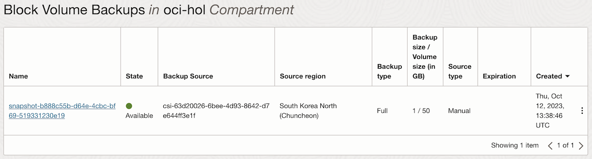

1.2.3.3 Kubernetes Volume Snapshot 만들기
OCI Block Volume Backup과 연계하여 Kubernetes Volume Snapshot 기능을 제공합니다. 재해 복구 전략의 일부로 Persistent Volume을 백업하고, 복구시에 사용할 수 있습니다.
Block Volume Snapshot 사용 전제조건
- OKE 클러스터 Control Plane의 쿠버네티스 버전은 1.24 이상
- Worker Node가 AMD 또는 Arm 기반이어야 함
- Worker Node는 Oracle Linux 7 또는 Oracle Linux 8
CSI Snapshotter 설치
-
CSI Snapshotter를 설치합니다.
kubectl apply -f https://raw.githubusercontent.com/kubernetes-csi/external-snapshotter/master/client/config/crd/snapshot.storage.k8s.io_volumesnapshotclasses.yaml kubectl apply -f https://raw.githubusercontent.com/kubernetes-csi/external-snapshotter/master/client/config/crd/snapshot.storage.k8s.io_volumesnapshotcontents.yaml kubectl apply -f https://raw.githubusercontent.com/kubernetes-csi/external-snapshotter/master/client/config/crd/snapshot.storage.k8s.io_volumesnapshots.yaml
테스트 환경 준비
-
1.2.3.1 Block Volume 사용하기에서 Block Volume을 사용하여, Persistent Volume을 구성한 예제를 그대로 사용합니다.
-
현재 상태를 조회하면 다음과 같습니다.
- CSI Volume Plugin을 통해 제공하는 기능으로 반드시 oci-bv StorageClass를 사용하는 Persistent Volume 이어야 합니다.
- /usr/share/nginx/html 폴더가 PV를 마운트하고 있습니다.
- 마운트된 폴더에 파일 쓰기를 한 상태로 이후 실습에서 해당내용이 복구되는 지 확인할 예정
$ kubectl get pvc NAME STATUS VOLUME CAPACITY ACCESS MODES STORAGECLASS AGE csi-bvs-pvc Bound csi-63d20026-6bee-4d93-8642-d7e644ff3e1f 50Gi RWO oci-bv 31m $ kubectl get pod NAME READY STATUS RESTARTS AGE nginx-bvs-pvc-549db9449b-fg82v 1/1 Running 0 2m11s $ kubectl exec -it nginx-bvs-pvc-549db9449b-fg82v -- cat /usr/share/nginx/html/hello_world.txt Hello PV
#1. 동적(Dynamically)으로 Volume Snapshot 만들기
현재 사용중인 Persistent Volume 기준으로 Snapshot을 만들 때 사용하는 방법입니다.
-
Snapshot을 만들기 전에 먼저 VolumeSnapshotClass를 먼저 정의합니다.
# csi-bv-snapshotclass.yaml apiVersion: snapshot.storage.k8s.io/v1 kind: VolumeSnapshotClass metadata: name: csi-bv-snapshotclass driver: blockvolume.csi.oraclecloud.com parameters: backupType: full deletionPolicy: Delete- driver: 사용할 CSI volume plugin으로
blockvolume.csi.oraclecloud.com지정 - parameters.backupType:
full,incremental으로 OCI Block Volume Backup과 동일 - deletionPolicy:
Delete,Retain옵션이 있음. VolumeSnapshot이 삭제되면, 연계된 block volume backup을 삭제할지 여부를 지정함
- driver: 사용할 CSI volume plugin으로
-
VolumeSnapshotClass 생성, 확인합니다.
$ kubectl apply -f csi-bv-snapshotclass.yaml volumesnapshotclass.snapshot.storage.k8s.io/csi-bv-snapshotclass created $ kubectl get volumesnapshotclasses NAME DRIVER DELETIONPOLICY AGE csi-bv-snapshotclass blockvolume.csi.oraclecloud.com Delete 2m5s -
VolumeSnapshotClass으로 백업할 PVC에 대한 Snapshot 생성을 YAML을 정의합니다.
# my-snapshot.yaml apiVersion: snapshot.storage.k8s.io/v1 kind: VolumeSnapshot metadata: name: my-snapshot namespace: default spec: volumeSnapshotClassName: csi-bv-snapshotclass source: persistentVolumeClaimName: csi-bvs-pvc -
YAML을 실행하여 VolumeSnapshot을 생성합니다. 생성이 완료되면 READYTOUSE가 true가 됩니다.
$ kubectl apply -f my-snapshot.yaml volumesnapshot.snapshot.storage.k8s.io/my-snapshot created $ kubectl get volumesnapshot NAME READYTOUSE SOURCEPVC SOURCESNAPSHOTCONTENT RESTORESIZE SNAPSHOTCLASS SNAPSHOTCONTENT CREATIONTIME AGE my-snapshot true csi-bvs-pvc 50Gi csi-bv-snapshotclass snapcontent-b888c55b-d64e-4cbc-bf69-519331230e19 61s 62s -
VolumeSnapshot이 생성되면, VolumeSnapshotContent가 함께 생성되며 매핑되는 Block Volume Backup 정보를 가지고 있습니다. VolumeSnapshotContent 오브젝트는 임의로 변경하지 않습니다.
$ kubectl get volumesnapshotcontents NAME READYTOUSE RESTORESIZE DELETIONPOLICY DRIVER VOLUMESNAPSHOTCLASS VOLUMESNAPSHOT VOLUMESNAPSHOTNAMESPACE AGE snapcontent-b888c55b-d64e-4cbc-bf69-519331230e19 true 53687091200 Delete blockvolume.csi.oraclecloud.com csi-bv-snapshotclass my-snapshot default 5m28s -
OCI 콘솔에서 보면 같은 이름으로 Block Volume Backup이 만들어 진 걸 볼 수 있습니다.

장애복구를 가정하여, Volume Snapshot으로 새 Volume 만들기
-
장애 상황을 가정하여, 현재 배포된 테스트 앱과 PVC를 삭제합니다.
kubectl delete -f nginx-deployment-bvs-pvc.yaml kubectl delete -f csi-bvs-pvc.yaml -
Snapshot으로 Persistent Volume을 만들기 위한 PVC YAML 파일을 만듭니다.
- Block Volume Backup으로 PV용 새 Block Volume을 만들게 됩니다.
# pvc-from-snapshot.yaml apiVersion: v1 kind: PersistentVolumeClaim metadata: name: pvc-from-snapshot namespace: default spec: storageClassName: oci-bv dataSource: name: my-snapshot kind: VolumeSnapshot apiGroup: snapshot.storage.k8s.io accessModes: - ReadWriteOnce resources: requests: storage: 50Gi- datasource.name: 소스로 사용할 VolumeSnapshot 이름 지정
-
PVC YAML을 실행합니다.
kubectl apply -f pvc-from-snapshot.yaml -
테스트 앱 복구용 YAML 작성
- 1.2.3.1 Block Volume 사용하기에서 사용한 테스트앱에서 persistentVolumeClaim.claimName을 Snapshot에서 만든 pvc-from-snapshot로 지정합니다.
# nginx-deployment-bvs-pvc-from-snapshot.yaml apiVersion: apps/v1 kind: Deployment metadata: labels: app: nginx-bvs-pvc name: nginx-bvs-pvc spec: replicas: 1 selector: matchLabels: app: nginx-bvs-pvc template: metadata: labels: app: nginx-bvs-pvc spec: containers: - name: nginx image: nginx:latest volumeMounts: - name: data mountPath: /usr/share/nginx/html volumes: - name: data persistentVolumeClaim: claimName: pvc-from-snapshot -
테스트앱 배포
- 테스트 앱에 배포되면, 앞선 PVC에 바인딩되는 Persistent Volume이 만들어 지면서 새 Block Volume이 생성됩니다.
kubectl apply -f nginx-deployment-bvs-pvc-from-snapshot.yaml -
복구된 앱에서 파일 내용을 확인해 보면, 잘 복구된 것을 알 수 있습니다.
$ kubectl get pod NAME READY STATUS RESTARTS AGE nginx-bvs-pvc-666979b5c4-c28bv 1/1 Running 0 77s $ kubectl exec -it nginx-bvs-pvc-666979b5c4-c28bv -- cat /usr/share/nginx/html/hello_world.txt Hello PV
#2. 정적(Statically)으로 Volume Snapshot 만들기
수동으로 OCI Block Volume Backup을 받은 경우, 해당 백업을 이용하여, Kubernetes Snapshop을 만들고, Persistent Volume을 만들어 복구하는 방식입니다.
-
사용한 Block Volume Backup의 OCID를 확인합니다.
-
해당 Backup에 매핑되는 VolumeSnapshotContent을 정의합니다.
# snapshot-content-from-backup.yaml apiVersion: snapshot.storage.k8s.io/v1 kind: VolumeSnapshotContent metadata: name: snapshot-content-from-backup spec: deletionPolicy: Retain driver: blockvolume.csi.oraclecloud.com source: snapshotHandle: ocid1.volumebackup.oc1.iad.aaaaaa______xbd volumeSnapshotRef: name: my-static-snapshot namespace: default- deletionPolicy:
Delete,Retain옵션이 있음. VolumeSnapshot이 삭제되면, 연계된 block volume backup을 삭제할지 여부를 지정함 - driver: 사용할 CSI volume plugin으로
blockvolume.csi.oraclecloud.com지정 - snapshotHandle: 사용할 Block Volume Backup의 OCID를 입력
- volumeSnapshotRef.name: 이후 생성할 VolumeSnapshot의 이름
- deletionPolicy:
-
VolumeSnapshotContent을 생성합니다.
kubectl apply -f snapshot-content-from-backup.yaml -
VolumeSnapshot을 정의합니다.
# my-static-snapshot.yaml apiVersion: snapshot.storage.k8s.io/v1 kind: VolumeSnapshot metadata: name: my-static-snapshot spec: source: volumeSnapshotContentName: snapshot-content-from-backup -
VolumeSnapshot을 생성합니다.
kubectl apply -f my-static-snapshot.yaml -
동적으로 생성한 것과 정적으로 생성한 것의 차이를 확인할 수 있습니다.
$ kubectl get volumesnapshotcontent NAME READYTOUSE RESTORESIZE DELETIONPOLICY DRIVER VOLUMESNAPSHOTCLASS VOLUMESNAPSHOT VOLUMESNAPSHOTNAMESPACE AGE snapcontent-b888c55b-d64e-4cbc-bf69-519331230e19 true 53687091200 Delete blockvolume.csi.oraclecloud.com csi-bv-snapshotclass my-snapshot default 18h snapshot-content-from-backup true 0 Retain blockvolume.csi.oraclecloud.com my-static-snapshot default 5m53s $ kubectl get volumesnapshot NAME READYTOUSE SOURCEPVC SOURCESNAPSHOTCONTENT RESTORESIZE SNAPSHOTCLASS SNAPSHOTCONTENT CREATIONTIME AGE my-snapshot true csi-bvs-pvc 50Gi csi-bv-snapshotclass snapcontent-b888c55b-d64e-4cbc-bf69-519331230e19 18h 18h my-static-snapshot true snapshot-content-from-backup 0 snapshot-content-from-backup 4m27s 49s
장애복구를 가정하여, Volume Snapshot으로 새 Volume 만들기
절차 자체는 동적(Dynamically)으로 Volume Snapshot에서 복구할때랑 동일합니다.
-
앞서 배포된 테스트 앱과 PVC가 남아있다면 삭제합니다.
-
Snapshot으로 Persistent Volume을 만들기 위한 PVC YAML 파일을 만듭니다.
- Block Volume Backup으로 PV용 새 Block Volume을 만들게 됩니다.
# pvc-from-static-snapshot.yaml apiVersion: v1 kind: PersistentVolumeClaim metadata: name: pvc-from-static-snapshot namespace: default spec: storageClassName: oci-bv dataSource: name: my-static-snapshot kind: VolumeSnapshot apiGroup: snapshot.storage.k8s.io accessModes: - ReadWriteOnce resources: requests: storage: 50Gi- datasource.name: 소스로 사용할 VolumeSnapshot 이름 지정
-
PVC YAML을 실행합니다.
kubectl apply -f pvc-from-static-snapshot.yaml -
테스트 앱 복구용 YAML 작성
- 테스트앱에서 persistentVolumeClaim.claimName을 Snapshot에서 만든 pvc-from-static-snapshot로 지정합니다.
# nginx-deployment-bvs-pvc-from-static-snapshot.yaml apiVersion: apps/v1 kind: Deployment metadata: labels: app: nginx-bvs-pvc name: nginx-bvs-pvc spec: replicas: 1 selector: matchLabels: app: nginx-bvs-pvc template: metadata: labels: app: nginx-bvs-pvc spec: containers: - name: nginx image: nginx:latest volumeMounts: - name: data mountPath: /usr/share/nginx/html volumes: - name: data persistentVolumeClaim: claimName: pvc-from-static-snapshot -
테스트앱 배포
- 테스트 앱에 배포되면, 앞선 PVC에 바인딩되는 Persistent Volume이 만들어 지면서 새 Block Volume이 생성됩니다.
kubectl apply -f nginx-deployment-bvs-pvc-from-static-snapshot.yaml -
복구된 앱에서 파일 내용을 확인해 보면, 잘 복구된 것을 알 수 있습니다.
$ kubectl get pod NAME READY STATUS RESTARTS AGE nginx-bvs-pvc-74cb959b5c-5vd44 1/1 Running 0 91s $ kubectl exec -it nginx-bvs-pvc-74cb959b5c-5vd44 -- cat /usr/share/nginx/html/hello_world.txt Hello PV
이 글은 개인으로서, 개인의 시간을 할애하여 작성된 글입니다. 글의 내용에 오류가 있을 수 있으며, 글 속의 의견은 개인적인 의견입니다.